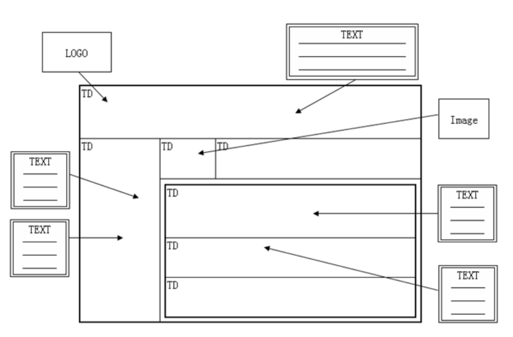
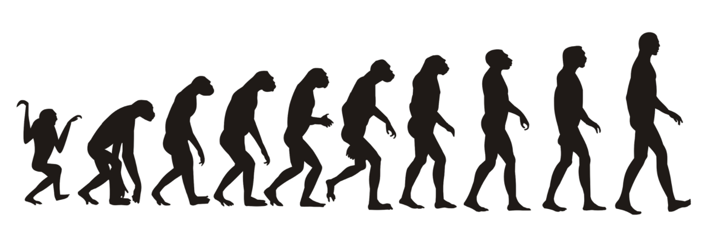

CSS 布局简介
简单来说，CSS 布局就是将元素显示在视窗的正确位置。打个简单的比喻就是把乱七八糟的狗窝变得干净整洁。
table 时代
在很久很久之前，网页都是使用 table 来搞定的，每个格子里面填进对应的内容，就形成了最终的网页。

那个时代，Adobe Fireworks 是网页三剑客之一，必学软件之一。但是随着技术的发展，时代的需求，table 终将慢慢落幕，回归到它的本质工作。
CSS 时代
但是在2003年5月，随着 CSS Zen Garden 的横空出世，宣告正式由 table 布局进入了 CSS 布局时代。其作者 Dave Shea 更是对一份 HTML 结构，通过设计不同的 CSS 带来了5个风格迥异的作品，于是 CSS 正式华丽走入布局舞台，table 慢慢成为被遗弃的孩子。
由于 CSS 布局对于标签要求不是很严格，主要的火候在于对 CSS 的控制，而 div 标签又没有什么特殊的语义，除了默认是个块级元素外，其他什么都没有，于是正好搭上 CSS 顺风车，遍地开花。甚至于有了一个不成明的布局对比：table 布局 与 div + CSS 布局。当然我们要明白的是真正的主角是不可替换的 CSS，div 只是为了与 table 标签形成对比而辅助赠送的。
虽然 CSS 布局开始如火如荼烧遍整个 Web 战场，但其常用的布局技术就是：inline-block、float、position，而且整整十年没变。这并不是说这些技术已经够用了，相反这些都算不上真正的为布局而生的技术，都是被逼上布局这个“梁山”的。譬如剩余宽度的处理，分布对齐的问题始终是个难题。
然而技术终究是发展的，时代的年轮总是滚滚向前。CSS3 的到来给整个 CSS 带来了翻天覆地的变化，而真正为布局而生的 flexbox 更是经历了三次浴火重生来到我们面前，一扫从前的荆棘，为我们提供更好的布局服务。除此之外，另一布局担当 Grid 也已拥有洪荒之力，就看你的能耐发挥了。（同样 HTML5 也是带来了更多语义化标签来替代千变一律的 div）
稍微再展望下未来，我们还有 CSS Houdini 这一强大利器蓄势待发。所以一路走来，也许磕磕碰碰，但是前景还是值得憧憬的。
